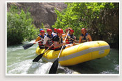
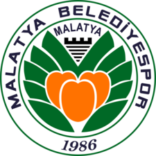

Malatya’da sporun tarihsel süreci; düğün, bayram gibi özel günlerde halkın büyük bir katılımı ile yapılan karakucak güreşleri, atlı cirit oyunu, saldırım taş atma (bacak arası), ileri taş atma, kuvvet denemesi (taş kaldırma) at yarışları, halat (kendir) çekme, yüzme vb. geleneksel sporlarla başlar.
Cumhuriyetin ilk yıllarında Malatya’da spor, geleneksel sporların yanında, mahalle aralarında yapılan futbol maçları, okullarda, müesseselerde ve halkevlerinin bünyesinde yapılan sportif faaliyetlerle devam etmiştir.
Malatya’nın ilk spor kulübü olan Malatyagücü kulübünün kurulmasından sonra, Fıratspor, Akınspor, Coşkunspor, Adafıspor, Demirspor, Orduzu Maarif Spor, Malatya İdman Yurdu, Havagücü, Malatya Gençlik, Darendespor kulüpleri kurulmuştur. 1966 yılında Akınspor, Çoşkunspor, Hürriyet Gençlik ve Adafıspor, birleşmesi ile Malatyaspor kulübü kurulmuştur. Bu kulübümüz uzun yıllar Türkiye liglerinde Malatya’yı temsilen çok önemli ve başarılı faaliyetler yapmıştır. Ayrıca 1986 yılında kurulan Malatya Belediye Spor Kulübü 2009 – 2010 Futbol sezonunda Türkiye 2. Ligine çıkma başarısı göstermiş ve 12 Mayıs 2012 tarihli kongre ile ismini Yeni Malatya Spor Futbol Kulübü olarak değiştirilmiş olup, ardından Futbol 1.nci Ligine çıkmış, 2017 – 2018 Futbol sezonundan beri de Süper Lig de ilimizi başarı ile temsil etmektedir.
29 Haziran 1938 yılında Beden Terbiyesi ve Umum Müdürlüğünün kurulması, yurt çapında sporda teşkilatlanma ve yeni spor kulüplerinin kuruluşunu yaygınlaştırmıştır. Buna paralel olarak ilimizde de Tekel, Sümer ve Şeker gibi müesseseler spora çok önem vermiş ve bu çerçevede yüzme, bisiklet, atletizm, voleybol, futbol, boks, güreş ve tenis gibi birçok sporların başlamasına ve gelişmesine katkıda bulunmuştur.
Malatya ilinde sporda ilk tesisleşmeler Tekel, Sümer gibi müesseseler eli ile başlatılmış olup, bu tesislere en eski ve en kapasiteli örnek Sümerbank fabrikasının alanında yaptırılan yüzme havuzu ve atlama kuleleri sayılabilir. Bir başka önemli kurum tesisi ise şeker futbol sahasıdır. Bu saha da uzun yıllar Malatya sporcularına hizmet etmiştir.
İlimizde yapılan spor faaliyetlerinin başarı seviyesi Malatya ilinin yer aldığı Sosyo-Ekonomik bölge açısından değerlendirildiğinde çevre illerde dahil ve bölgeye göre oldukça yüksek seviyelerdedir. İlimizde yapılan spor çeşidi 43’ye, Spor Kulübü Sayısı 184’e ulaşmış bulunmaktadır. SGM Lisanslı Sporcu Sayımız 64.339,Okul Sporlarına katılan Sporcu Sayısı 10.663, İl Spor Merkezleri (Yaz Spor Okulları) Sporcu Sayısı ise 7.384 ulaşmıştır.
İlimizde yetişen sporcularımız özellikle Engelli branşlarda oldukça başarılı sonuçlar almıştır. İşitme Engelli, Özel Engelli ve Ampüte Milli takımımıza giren Malatya’lı sporcularımız Avrupa ve Dünya şampiyonalarında, Engelli Olimpiyatlarında ve Türkiye Şampiyonlarında yüksek dereceler elde ederek göğsümüzü kabartmaya devam etmektedir.
Diğer branşlarda ise Atletizm, Güreş, Boks, Kick Boks, Taekwondo, Hokey, Masa Tenisi, Modern Pentatlon ve Badminton gibi branşlarda oldukça başarılı sporcular yetişmiştir. Yalnızca 2009 – 2021 yılları arasında ilimizden Milli Takımlara değişik branşlarda 346 sporcu gönderilmiş olup bu sayı ise ilimiz Gençlik ve Spor İl Müdürlüğümüzün, Gençlerimizin, Kulüplerimizin ve Antrenörlerimizin ne denli başarılı olduğunun çok önemli bir göstergesidir.
Yeni Malatyaspor, veya sponsorluk anlaşması gereği Helenex Yeni Malatyaspor, Malatya merkezli bir spor kulübüdür. Takım, şu anda Süper Lig'de mücadele etmektedir. Renkleri sarı-kırmızı-siyah olup, birçok spor branşında faaliyet göstermektedir. Maçlarını Yeni Malatya Stadyumu'nda oynamaktadır.
1986 yılında Malatya Belediyespor olarak kurulmuş ve renkleri turuncu-yeşil olarak kabul edilmiştir. Malatya Belediyespor amatör kümeden 2 sezon içinde 2. Lig'e çıkarak büyük bir başarıya imza atmıştır. Bu başarıya önce 1997-1998 yılında 3. Lige yükselerek ardından bir sezon sonra 1998-1999 sezonunda 3. Lig'de şampiyon olarak 2.Lig'e çıkarak ulaşmıştır. 1999-2000 sezonunda 2. Lig'de grubunda sonuncu olup 3. Lig'e düşmüş, 2000-2001 sezonunda da 3. Lig'den Amatör Lig'e düşmüştür.
2006-2007 sezonunda Amatör Lig'den 3. Lig'e çıkan Malatya Belediyespor 2007-2008'de 3. Lig 1. Grup'ta averajla 2. olmuş ve 2. Lig'de oynamaya hak kazanmıştır. Aynı sezon, küme düşerek 3. Lig'e düşmüştür. 2009-2010 sezonunda Tek.Dir. Nihat Balan yönetiminde Play-offlarla tekrar ikinci lige çıkan Malatya Belediyespor, ismini Yeni Malatyaspor olarak değiştirmiştir. 12 Mayıs 2012 tarihli kongre ile adı Yeni Malatyaspor'dan Malatyaspor Futbol Kulübü'ne dönüştürülmüş, renkleri sarı-kırmızı kabul edilmiştir ama UEFA kriterleri nedeniyle isim değişikliği TFF tarafından onaylanmamıştır. Son olarak Yeni Malatyaspor ismiyle devam etmesine karar verilmiştir. Kulübün resmi sitesinde belirtiliği üzere resmi renkleri sarı-siyah, üçüncü rengi kırmızı olarak beyan edilmiştir. Malatyaspor ile Yeni Malatyaspor aynı takım değildir.
Takım, 2014-15 sezonunda TFF 2.Lig Beyaz Grubu şampiyon olarak tamamlamış ve tarihinde ilk kez 1. Lig'e yükselmiştir. 2015-16 sezonu öncesinde Sunday Mba'yı kadrosuna katarak, kulüp tarihindeki ilk yabancı futbolcu transferi gerçekleştirilmiştir. Son olarak 8 Ekim 2015'te, kötü sonuçlar nedeni ile teknik direktör Yücel İldiz ile yollarını ayırmış ve 11 Ekim 2015'te teknik direktör İrfan Buz ile anlaşma sağlanmıştır. 23 Aralık 2015'te isim sponsorluğu alarak ismi, Alima Yeni Malatyaspor olmuştur. Alima ile olan anlaşmanın 2016'da bitmesiyle Yeni Malatyaspor adına dönen kulüp, 30 Kasım 2016'da yeni bir sponsorluk anlaşmasıyla Evkur Yeni Malatyaspor adını almıştır. 2016-2017 Sezonunda 1. Ligde 2. olarak Süper Lig'e yükseldi.
2019-20 sezonu öncesinde gerçekleşen olağan genel kurulda mevcut başkan Adil Gevrek tekrar başkanlık görevine seçildi. Kongrenin ardından teknik direktörlük görevine Sergen Yalçın'ın getirildiği açıklandı. 28 Ağustos 2019'da BtcTurk ile isim ve forma göğüs sponsorluğu anlaşması imzalandı. Kulübün adı 2019-2020 sezonu boyunca BtcTurk Yeni Malatyaspor oldu. 15 Ocak 2020 tarihinde Sergen Yalçın ile yollar ayrıldı. Sergen Yalçın'dan boşalan koltuğa Kemal Özdeş oturdu, görevini 1 Mart 2020 tarihinde bıraktı. Ardından göreve Hikmet Karaman getirilmiştir.
2019-2020 sezonu sonunda küme düşmüştür. Fakat Türkiye Futbol Federasyonu'nun aldığı kararla ligde kalmıştır. Hikmet Karaman ile yapılan sözleşme 18 Ağustos 2020'de karşılıklı olarak feshedilmiştir.